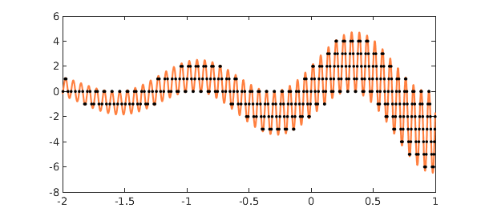
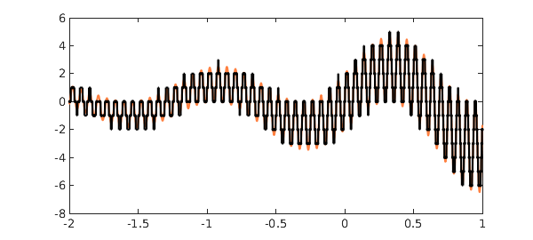

My essay "Six myths of polynomial interpolation and quadrature", reproduced as an appendix in [1], closes with an example that reminds one of a tiger's tail. Here with a few modifications is that example:
x = chebfun('x',[-2 1]);
LW = 'linewidth'; MS = 'markersize';
CO = 'color'; orange = [1 .5 .25];
f = 2*exp(.5*x).*(sin(5*x) + sin(101*x));
roundf = round(f);
r = roots(f-roundf,'nojump');
hold off, plot(f,LW,2,CO,orange), hold on
ylim([-8 6])
plot(r,f(r),'.k',MS,12), hold off

Let's look at what's going on here. First of all a chebfun $f$ is constructed:
plot(f,LW,1.6,CO,orange) ylim([-8 6])
Then another chebfun is constructed consisting of $f$ rounded to integers:
plot(roundf,LW,0.8,'-k','jumpline','k') ylim([-8 6])
Superimposing the two curves yields a lot of intersections, which are computed by roots:
number_of_roots = length(r) plot(f,LW,1.6,CO,orange), hold on plot(roundf,LW,0.8,'-k','jumpline','k') plot(r,f(r),'.k',MS,8), hold off
number_of_roots = 345

In [1], dots appear not only where $f$ is equal to an integer, but also where it is equal to a half-integer. In the present version of the tiger's tail, this effect has been eliminated by use of the 'nojump' flag in roots.
Reference
- L. N. Trefethen, Approximation Theory and Approximation Practice, SIAM, 2013.